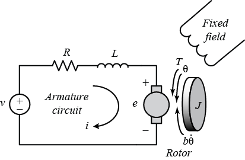
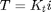
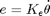
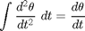
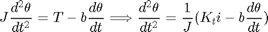
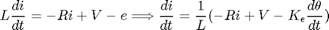
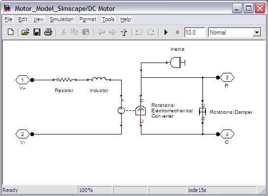
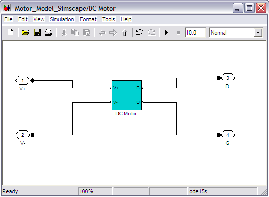
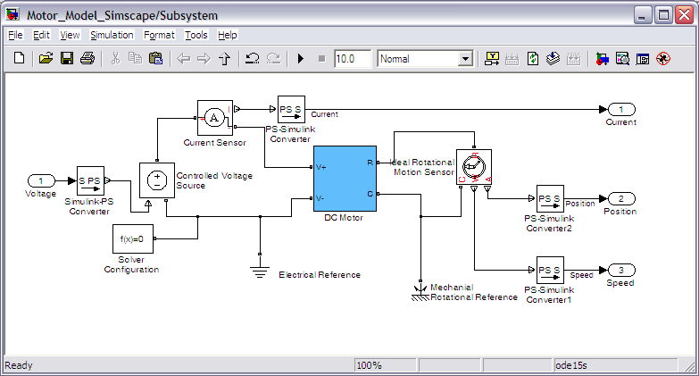
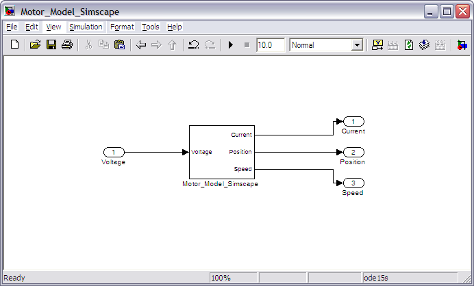

DC Motor Speed: Simulink Modeling
Contents
Physical setup
A common actuator in control systems is the DC motor. It directly provides rotary motion and, coupled with wheels or drums and cables, can provide translational motion. The electric circuit of the armature and the free-body diagram of the rotor are shown in the following figure:

For this example, we will assume that the input of the system is the voltage source (V) applied to the motor's armature, while the output is the rotational speed of the shaft d(theta)/dt. The rotor and shaft are assumed to be rigid. We further assume a viscous friction model, that is, the friction torque is proportional to shaft angular velocity.
The physical parameters for our example are:
(J) moment of inertia of the rotor 0.01 kg.m^2
(b) motor viscous friction constant 0.1 N.m.s
(Ke) electromotive force constant 0.01 V/rad/sec
(Kt) motor torque constant 0.01 N.m/Amp
(R) electric resistance 1 Ohm
(L) electric inductance 0.5 H
In general, the torque generated by a DC motor is proportional to the armature current and the strength of the magnetic field. In this example we will assume that the magnetic field is constant and, therefore, that the motor torque is proportional to only the armature current i by a constant factor Kt as shown in the equation below. This is referred to as an armature-controlled motor.
(1)
The back emf, e, is proportional to the angular velocity of the shaft by a constant factor Ke.
(2)
In SI units, the motor torque and back emf constants are equal, that is, Kt = Ke; therefore, we will use K to represent both the motor torque constant and the back emf constant.
Building the model with Simulink
This system will be modeled by summing the torques acting on the rotor inertia and integrating the acceleration to give velocity. Also, Kirchoff's laws will be applied to the armature circuit. First, we will model the integrals of the rotational acceleration and of the rate of change of the armature current.
(3)
(4)
To build the simulation model, open Simulink and open a new model window. Then follow the steps listed below.
- Insert an Integrator block from the Simulink/Continuous library and draw lines to and from its input and output terminals.
- Label the input line "d2/dt2(theta)" and the output line "d/dt(theta)" as shown below. To add such a label, double-click in the empty space just below the line.
- Insert another Integrator block above the previous one and draw lines to and from its input and output terminals.
- Label the input line "d/dt(i)" and the output line "i".

Next, we will apply Newton's law and Kirchoff's law to the motor system to generate the following equations:
(5)
(6)
The angular acceleration is equal to 1 / J multiplied by the sum of two terms (one positive, one negative). Similarly, the derivative of current is equal to 1 / L multiplied by the sum of three terms (one positive, two negative). Continuing to model these equations in Simulink, follow the steps given below.
- Insert two Gain blocks from the Simulink/Math Operations library, one attached to each of the integrators.
- Edit the Gain block corresponding to angular acceleration by double-clicking it and changing its value to "1/J".
- Change the label of this Gain block to "Inertia" by clicking on the word "Gain" underneath the block.
- Similarly, edit the other Gain's value to "1/L" and its label to "Inductance".
- Insert two Add blocks from the Simulink/Math Operations library, one attached by a line to each of the Gain blocks.
- Edit the signs of the Add block corresponding to rotation to "+-" since one term is positive and one is negative.
- Edit the signs of the other Add block to "-+-" to represent the signs of the terms in the electrical equation.

Now, we will add in the torques which are represented in the rotational equation. First, we will add in the damping torque.
- Insert a Gain block below the "Inertia" block. Next right-click on the block and select Format > Flip Block from the resulting menu to flip the block from left to right. You can also flip a selected block by holding down Ctrl-I.
- Set the Gain value to "b" and rename this block to "Damping".
- Tap a line (hold Ctrl while drawing or right-click on the line) off the rotational Integrator's output and connect it to the input of the "Damping" block.
- Draw a line from the "Damping" block output to the negative input of the rotational Add block.
Next, we will add in the torque from the armature.
- Insert a Gain block attached to the positive input of the rotational Add block with a line.
- Edit its value to "K" to represent the motor constant and Label it "Kt".
- Continue drawing the line leading from the current Integrator and connect it to the "Kt" block.

Now, we will add in the voltage terms which are represented in the electrical equation. First, we will add in the voltage drop across the armature resistance.
- Insert a Gain block above the "Inductance" block and flip it from left to right.
- Set the Gain value to "R" and rename this block to "Resistance".
- Tap a line off the current Integrator's output and connect it to the input of the "Resistance" block.
- Draw a line from the "Resistance" block's output to the upper negative input of the current equation Add block.
Next, we will add in the back emf from the motor.
- Insert a Gain block attached to the other negative input of the current Add block with a line.
- Edit it's value to "K" to represent the motor back emf constant and Label it "Ke".
- Tap a line off the rotational Integrator's output and connect it to the "Ke" block.
- Add In1 and Out1 blocks from the Simulink/Ports & Subsystems library and respectively label them "Voltage" and "Speed".
The final design should look like the example shown in the figure below.

In order to save all of these components as a single subsystem block, first select all of the blocks, then select Create Subsystem from the Edit menu. Name the subsystem "DC Motor" and then save the model. Your model should appear as follows. You can also download the file for this system here, Motor_Model.mdl. We use this model in the DC Motor Speed: Simulink Controller Design section.

Building the model with Simscape
In this section, we alternatively show how to build the DC Motor model using the physical modeling blocks of the Simscape extension to Simulink. The blocks in the Simscape library represent actual physical components; therefore, complex multi-domain models can be built without the need to build mathematical equations from physical principles as was done above by applying Newton's laws and Kirchoff's laws.
Open a new Simulink model and insert the following blocks to represent the electrical and mechanical elements of the DC motor.
- Resistor, Inductor and Rotational Electromechanical Converter blocks from the Simscape/Foundation Library/Electrical/Electrical Elements library
- Rotational Damper and Inertia blocks from the Simscape/Foundation Library/Mechanical/Rotational Elements library
- Four Connection Port blocks from the Simscape/Utilities library
Double-click on the Connection Port blocks to make the location of ports 1 and 2 from the Left and the location of ports 3 and 4 from the Right.
Connect and label the components as shown in the following figure. You can rotate a block in a similar manner to the way you flipped blocks, that is, by right-clicking on the block then selecting Rotate Block from the Format menu.

Complete the design of the DC motor Simscape model by assigning values to the physical parameters of each of the blocks to match our assumed values. To assign the necessary values, double-click on the Resistor, Inductor, Inertia, Rotational Damper, and Rotational Electromechanical Converter blocks and enter the following parameters and associated units:
Resistance = R [Ohm]
Inductance = L [H]
Inertia = J [kg*m^2]
Constant of Proportionality = K [V/(rad/s)]
Damping coefficient = b [N*m/(rad/s)]
The Rotational Damper block serves to model the viscous friction of the motor. This type of friction model was chosen because it is linear. In most cases real friction is more complicated than this. If you wish to employ a more complicated friction model, for instance to add Coulomb friction to the model, then you may use the Rotational Friction block from the Simscape/Foundation Library/Mechanical/Rotational Elements library.
Also note that in the above you generated a DC Motor model from the individual mechanical and electrical aspects of the motor. The Simscape library also includes a DC Motor block under the Simscape/SimElectronics/Actuators library. This block is used in the DC Motor Position: Simulink Modeling section.
The physical parameters must now be set. Enter the following commands at the MATLAB prompt.
J = 0.01; b = 0.1; K = 0.01; R = 1; L = 0.5;
These values are the same ones listed in the physical setup section.
You can then save these components in a single subsystem. Select all of the blocks and then choose Create Subsystem from the Edit menu. You can also change the subsystem block color by right-clicking on the block and choosing Format > Background Color from the resulting menu. This subsystem block can then be used to simulate the DC motor.

In order to simulate the response of this system it is further necessary to add sensor blocks to the model to simulate the measurement of various physical parameters and a voltage source to provide excitation to the motor. Furthermore, blocks are needed to interface Simscape blocks with tradtional Simulink blocks since the Simscape signals represent physical quantities with units, while the Simulink signals are dimensionless numbers. Add the following blocks to the model you just built to address these functions.
- Current Sensor block from the Simscape/Foundation Library/Electrical/Electrical Sensors library
- Controlled Voltage Source block from the Simscape/Foundation Library/Electrical/Electrical Sources library
- Two PS-Simulink Converter blocks and a Solver Configuration block from the Simscape/Utilities library
- Electrical Reference block from the Simscape/Foundation Library/Electrical/Electrical Elements library
- Ideal Rotational Motion Sensor block from the Simscape/Foundation Library/Mechanical/Mechanical Sensors library
- Mechanical Rotational Reference block from the Simscape/Foundation Library/Mechanical/Rotational Elements library
- Three Out1 blocks and one In1 block from the Simulink/Ports & Subsystems library
The Ideal Rotational Motion Sensor block represents a device that measures the difference in angular position and angular velocity between two nodes. In this case, we employ the block to measure the position and velocity of the motor shaft as compared to a fixed reference represented by the Mechanical Rotational Reference block. You can leave the Initial angle of the Rotational Motion Sensor block as the default 0 radians.
The Current Sensor block represents another sensor, specifically it measures the current drawn by the motor. The ground for the electrical portion of our system is defined by the Electrical Reference block.
The Controlled Voltage Source block serves as the power source for the motor where you can externally define the voltage signal by connecting an input to the block.
The PS-Simulink blocks convert physical signals to Simulink output signals, while the Simulink-PS block conversely converts a Simulink input signal to a physical signal. These blocks can be employed to convert the Simscape signals, which represent physical quantities with units, to Simulink signals, which don't explicitly have units attached to them. These blocks, in essence, can perform a units conversion between the physical signals and the Simulink signals. In our case, we can leave the units undefined since the input and output of each of the conversion blocks have the same units. In general, the Simscape blockset is employed to model the physical plant, while the Simulink blockset is employed to model the controller.
The Solver Configuration block is employed for defining the details of the numerical solver employed in running the Simscape simulation. We will use the default settings for this block.
Next, connect and label the components so that they appear as in the figure below. Double-click on the lines which are connected to the Out1 blocks and label them "Current", "Position", and "Speed". Also double-click on the In1 block and label it "Voltage".

You can save these components in a single subsystem with one input and three outputs. Select all of the blocks and then choose Create Subsystem from the Edit menu. Also label the subsystem and signals as shown in the following figure.

You can download the complete model file here, Motor_Model_Simscape.mdl, but note that you will need the Simscape addition to Simulink in order to run the file.
Note that the two models generated above will behave equivalently as long as they are built using the same parameter values. The difference between them is then only the ease with which they are built and interfaced with, and how transparent they are in presenting information to the user.
If you would like to actually run the models developed above and use them to simulate and develop control algorithms, you may continue on to the DC Motor Speed: Simulink Control page.